班级叫号器 · 图文使用说明
一台电脑装好，局域网里所有手机、平板、教室大屏都能用
适用版本 2.0.20 ｜ Windows 10 / 11 ｜ 开源许可证：GNU GPL v3（或更高版本）
为避免泄漏学生真实信息，本文档中出现的任何姓名均为随机姓名；截图中的摄像头画面与电脑桌面已打码处理。
一、这东西是干什么的
「班级叫号器」是一个放在教室电脑上的随机叫号 / 点名小软件。它自带 Python 运行环境，
解压即用、不用安装，双击就能跑；随机叫号的同时会用语音把学号、姓名和老师姓名念出来。
| 功能 | 说明 |
|---|
| 随机叫号 | 按学号或直接点名单叫号，自动语音播报，可带备注（如"带上作业"） |
| 名单管理 | 支持导入 CSV 名条、手工增删、搜索、清空 |
| 叫号记录 | 自动记录每一次叫号的时间、学号、姓名，可刷新、可清空 |
| 消息播报 | 输入一句话，电脑用语音念出来（通知、提醒都行） |
| 监控对讲 | 看电脑摄像头画面、听电脑麦克风、用手机对讲 |
| 文件传输 | 手机上直接浏览电脑文件、上传下载、新建/重命名/复制/移动/删除 |
| 远程控制 | 手机当鼠标键盘遥控电脑，支持多点触控 |
| 手机访问 | 同一个 Wi-Fi 下，手机浏览器输网址就能用，不用装 APP |
| 密码授权 | 敏感功能（监控 / 远控 / 文件 / 更新）需要本机创建密码后激活才可用 |
| 在线更新 | 内置 OTA：自动测速选最快线路，只下增量代码包，下载完再点一下安装重启 |
| 常驻运行 | 可开机自启、最小化到托盘，不占屏幕、不弹黑窗 |
二、第一次使用
2.1 启动软件
- 用安装包（推荐）：双击 班级叫号器_安装包_v2.0.19.exe（约 60 MB）。
安装向导一共 5 步：欢迎 → 许可协议 → 安装位置 → 安装 → 完成。
许可协议页显示的是 GNU GPL v3 的中文全文，勾选「我已阅读并同意上述许可协议」才能点下一步；
安装位置默认 C:\Program Files\班级叫号器，一般不用改。
中间会弹一次系统 UAC 提示，点「是」即可；最后一步可以直接勾上「立即启动」。
- 用绿色包：解压到任意目录（路径别带特殊符号），双击 start.bat。
- 启动后不会弹大窗口，屏幕右下角任务栏会出现一个托盘图标，软件已在后台运行。
- 想开机自动运行：网页里打开「设置 → 开机自启」并保存，以后开机自动在托盘里待命
（第一次申请管理员权限时点"是"，之后开机不再询问）。
托盘图标：左键弹出菜单，右键也是菜单。菜单里有「打开网页」「软件更新」「退出」。
有更新正在下载时，左键点托盘会直接打开更新界面。
2.2 打开操作界面
- 本机：浏览器打开 http://127.0.0.1:8000。
- 手机 / 其它电脑：连同一个 Wi-Fi，打开 http://主机名.local:8000
（主机名在设置里可改，默认 nine6），或者直接输电脑的局域网 IP。
- 敏感功能（监控、远控、文件、更新）在手机上需要走 https://主机名.local:9443，
首次会提示"证书不安全"，点「继续访问」即可。
2.3 主页长什么样
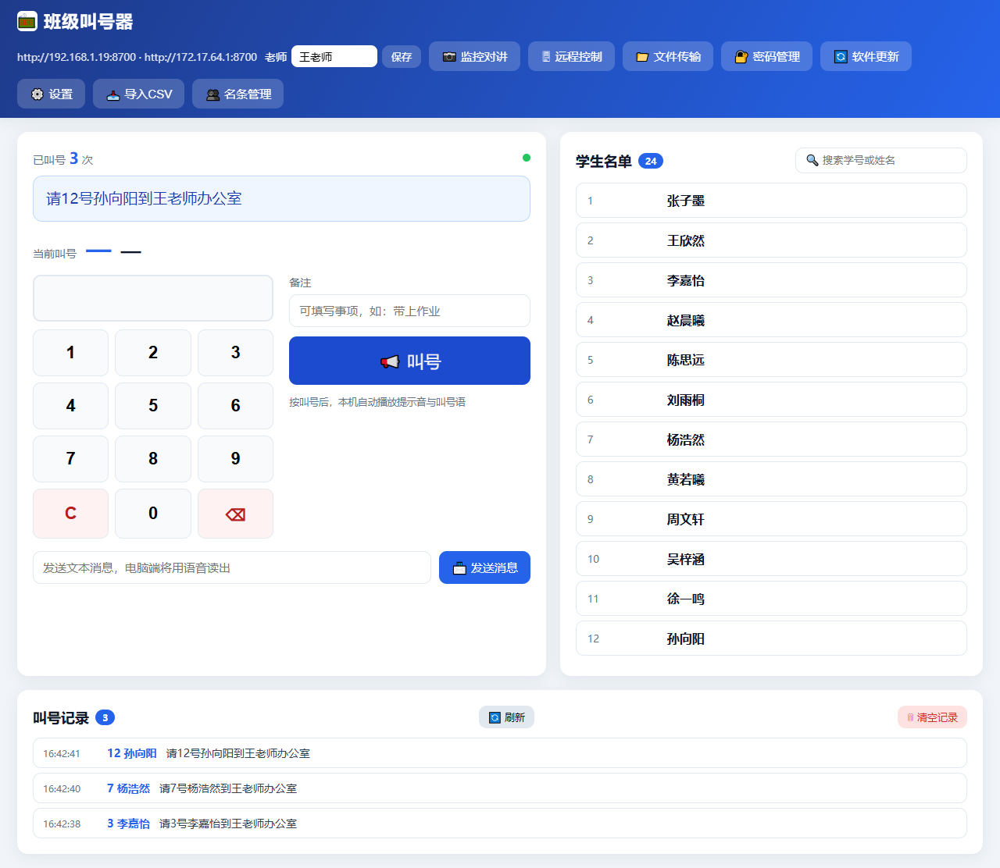
- 左边是叫号区：小键盘输学号、备注栏、叫号按钮。
- 中间是学生名单：点一下即可选中要叫的人，可用搜索框快速找人。
- 下面是叫号记录：每叫一次自动记一条，可刷新或清空。
图中为演示数据（示例名条），实际使用换成你班里的名单即可。
2.4 顶部工具栏每个按钮是干什么的
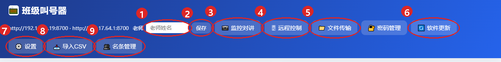
- 填老师姓名：叫号时会念"请3号张子墨到王老师办公室"，改完记得点保存。
- 点「保存」把老师姓名记下来。
- 「📷 监控对讲」：看摄像头画面、听声音、对讲。
- 「🖥 远程控制」：手机遥控这台电脑。
- 「📁 文件传输」：手机和电脑互传文件。
- 「🔄 软件更新」：检查并安装新版本。
- 「⚙️ 设置」：叫号语、提示音、端口、HTTPS、开机自启等都在这里。
- 「📥 导入CSV」：批量导入班级名单。
- 「👥 名条管理」：手工增删学生名条。
2.5 第一次启动：7 步设置向导
软件第一次运行时会自动弹出设置向导（判断依据：data/state.json 里还没有
wizard_done 标记）。没设置完之前，打开任何页面都会被拉回向导；设置完成后再也进不去，
想改设置请到「⚙️ 设置」。
- 第 1 步欢迎页：背景会放烟花，下面 7 个圆点表示进度；一路点「下一步 →」，随时可以「上一步」回去改。
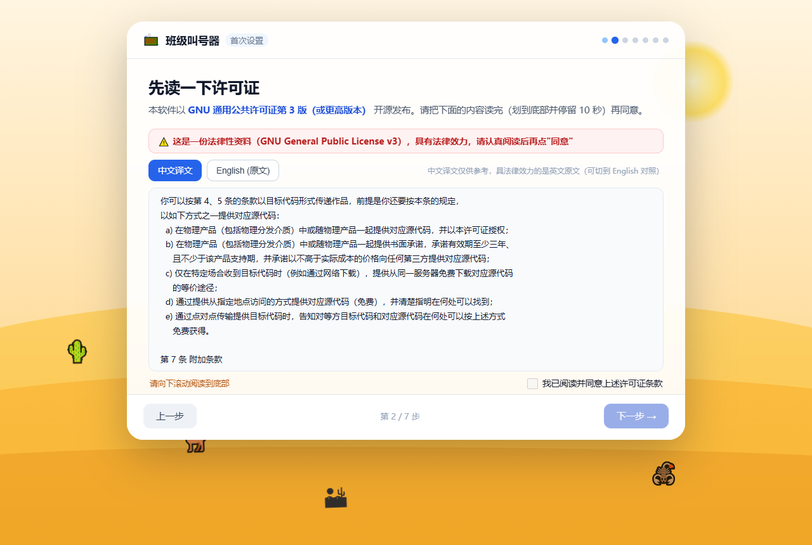
- 这是一份法律性资料：GPL 协议页明确标注，并且有「中文译文 / English」两个标签，可随时对照原文；
- 必须把当前标签的内容滚到底部（勾选框才会解锁）；
- 滚到底后还要停留 10 秒（会显示倒计时），再勾选「我已阅读并同意」，「下一步」才能点。
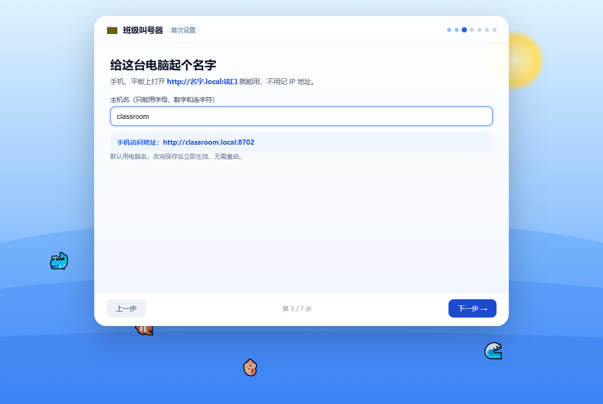
- 给电脑起个主机名（字母/数字/连字符），下面实时显示手机该访问的地址；
- 保存后手机用 http://新名字.local 立刻就能打开；
- 但 https://新名字.local（手机里的监控、文件、更新）要重启一次程序才会换上新名字的证书——
最后一步会给你一个「🔄 现在重启」按钮，点它就行。
名字没改就不用管这一步，不影响使用。
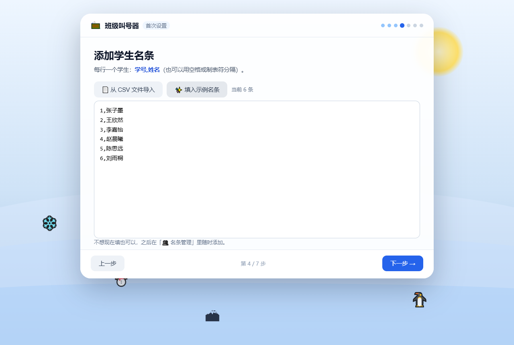
- 第 4 步填名条：每行「学号,姓名」，也可以点「从 CSV 文件导入」或「填入示例名条」；
- 不想现在填就留空，之后在「👥 名条管理」里加（已有名条不会被清空）。
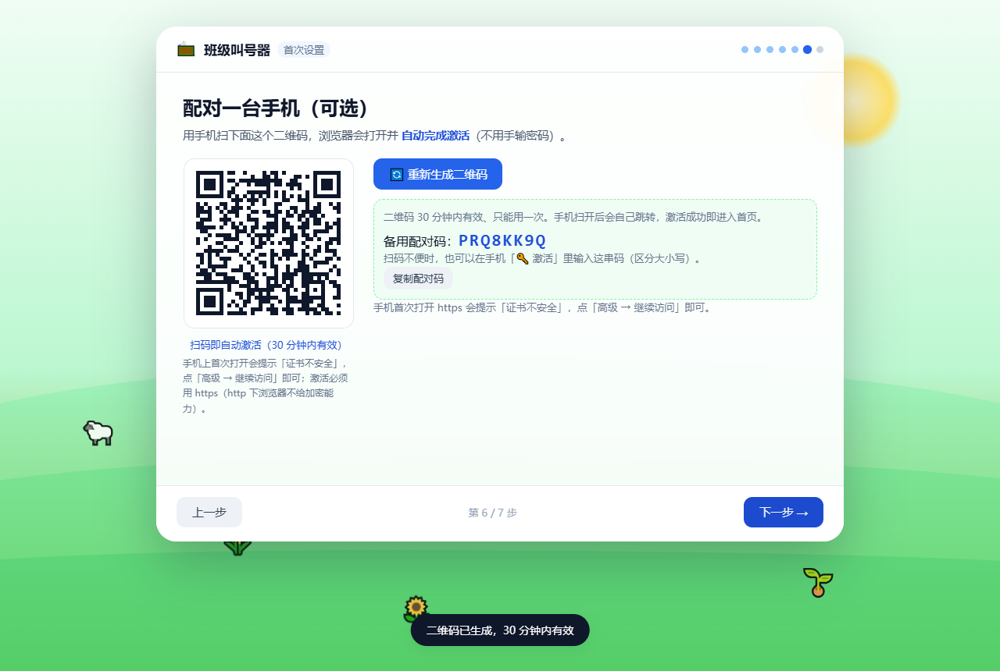
- 第 6 步扫码即自动激活：进入这一步会自动生成一张一次性二维码（30 分钟有效），用手机扫一下，浏览器会打开并 自动完成绑定，不用手输密码；
- 扫完手机会自己跳到首页；想换一台手机就点「🔄 重新生成二维码」，旧的立刻作废；
- 扫码不方便时，也可以让手机打开地址后点「🔑 激活」，输入界面上的备用配对码。
手机首次打开 https 会提示「证书不安全」，点「高级 → 继续访问」即可——激活必须要 https，http 下浏览器不给加密能力。
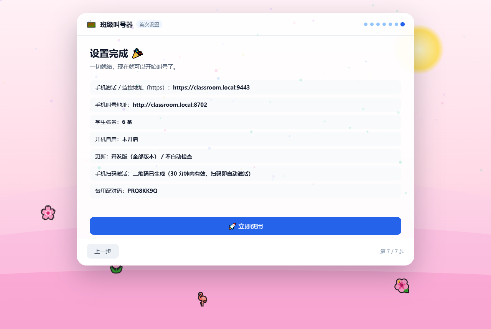
- 最后一步是设置完成页：列出主机地址、名条数量、自启与更新策略、配对密码；
- 点「🚀 立即使用」进入叫号主页，同时后台会把设置写入 data/；
- 如果前面改过主机名，这里会多一条橙色的「设备名改过了」提示和一个「🔄 现在重启」按钮：
mDNS 名字已经生效（http 可用），重启一次让 https 也用上新名字的证书。也可以先点「先这样，进入使用」，
之后在「设置 → 重启软件」里再重启。
每一步背景都会换一种卡通场景（森林 / 沙漠 / 海洋 / 雪山 / 星夜 / 草原 / 樱花），切换时带入场动画。
2.6 卸载
打开「控制面板 → 卸载程序」（或 设置 → 应用 → 已安装的应用），找到
班级叫号器（发布者 xiaoli，版本号与安装包一致）点卸载即可；也可以点开始菜单里
「班级叫号器 → 卸载 班级叫号器」。卸载会先关掉正在运行的程序，再问是否保留名单与记录：
选"是"会把 data 文件夹备份到「文档\班级叫号器数据」，重装后拷回安装目录就能恢复；
选"否"则程序、名单、叫号记录和配对密码一起删除。程序文件、桌面与开始菜单快捷方式、卸载项都会清理干净。
三、叫号
3.1 叫一个人
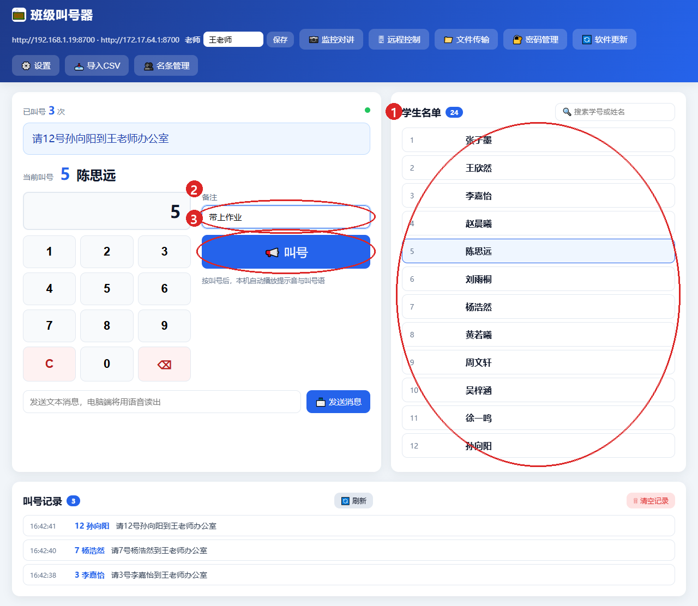
- 在名单里点一下学生（也可以用小键盘直接打学号）；
- 需要的话在备注里写一句，比如"带上作业"，会一起念出来；
- 点「📢 叫号」，本机会播放提示音并朗读"请 X 号 XXX 到 X 老师办公室…"。
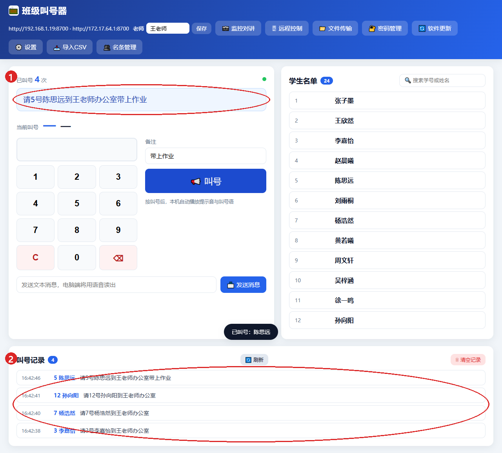
- 上方横幅显示刚才叫了谁；
- 下方叫号记录自动新增一条（学号、姓名、时间）。
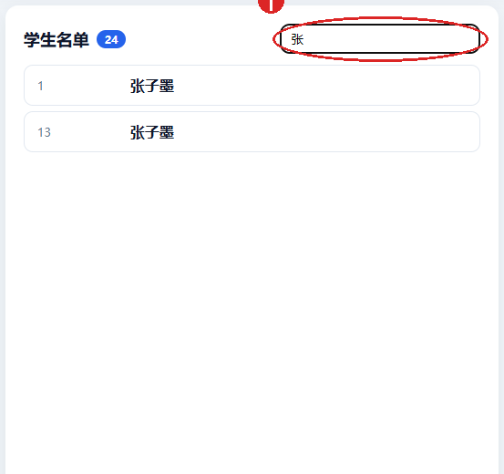
- 名单人多时，在搜索框输入学号或姓名的一部分，名单会实时过滤。
四、发送语音消息
不叫号、只想通知一件事时用它：电脑会用语音把这句话念出来。
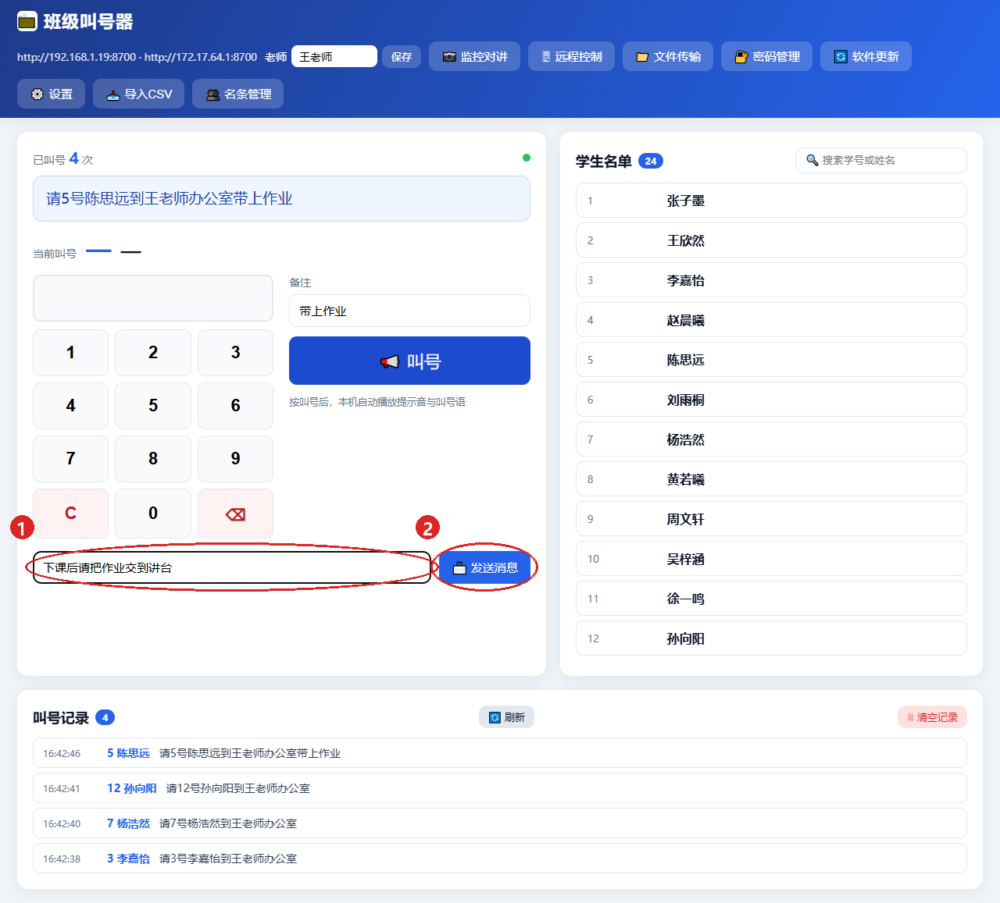
- 在输入框里写要播报的内容，比如"下课后请把作业交到讲台"；
- 点「📨 发送消息」，电脑立刻朗读。
五、名单管理
5.1 导入 CSV 名单
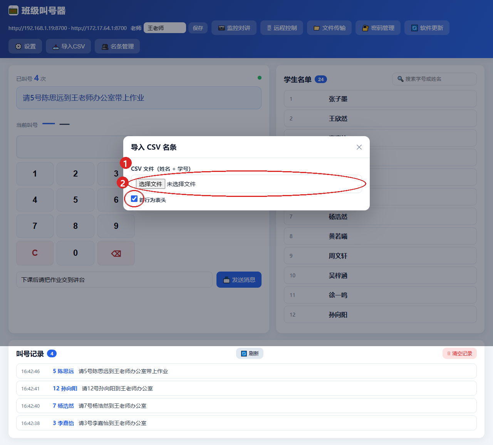
- 选择 CSV / TXT 文件（一列放学号、一列放姓名即可）；
- 文件带"学号""姓名"这类标题行时，勾上「首行为表头」；
- 选完后会自动识别列，确认无误点「确认导入」；不想导入了就点右上角 ✕ 关闭。
CSV 用 Excel 另存为"CSV UTF-8"最稳；学号列/姓名列可以自己选，导入方式支持追加或覆盖。
5.2 手工增删名条
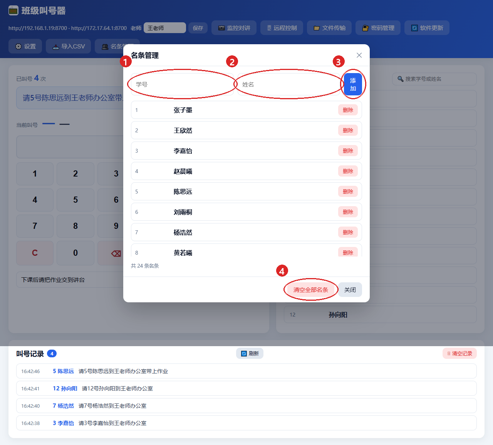
- 输入学号；
- 输入姓名；
- 点「添加」即可加入名单；
- 要一次性清空名单，点「清空全部名条」（会二次确认）。
六、设置
6.1 叫号语与声音
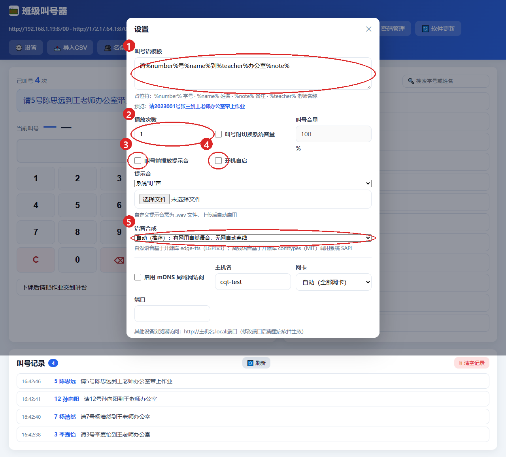
- 叫号语模板：可用 %number% 学号、%name% 姓名、%note% 备注、%teacher% 老师，下面会实时显示预览；
- 播放次数：一句话重复念几遍；
- 勾选「叫号前播放提示音」会先"叮"一声；
- 勾选「开机自启」：以后开机自动在托盘待命（需要一次管理员授权）；
- 语音合成：自动（有网用自然语音、没网自动转离线）、自然语音（需联网）、离线语音（不联网也能念）。
6.2 局域网访问与安全端口
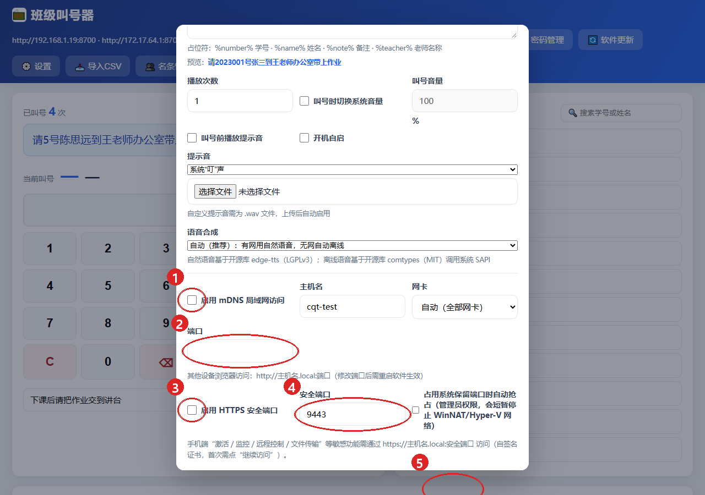
- 勾选启用 mDNS 局域网访问，手机才能用 主机名.local 访问；
- 端口：默认 8000，改了要重启软件生效；
- 主机名：改了之后手机用 http://新名字.local 立刻可用，但 https 要用新名字必须重启一次
（设置页下方有「🔄 重启软件」按钮，重启时会自动按新名字重签证书）；
- 勾选启用 HTTPS 安全端口：手机上的监控 / 远控 / 文件 / 激活都走加密端口；
- 安全端口：默认 9443；
- 改完点「保存设置」。
如果 9443 被 Windows 保留端口段占用导致打不开，可勾选上面的"自动抢占系统保留端口"（需管理员），
软件会释放该端口并持久保存，下次启动仍用同一个端口。
七、监控与对讲
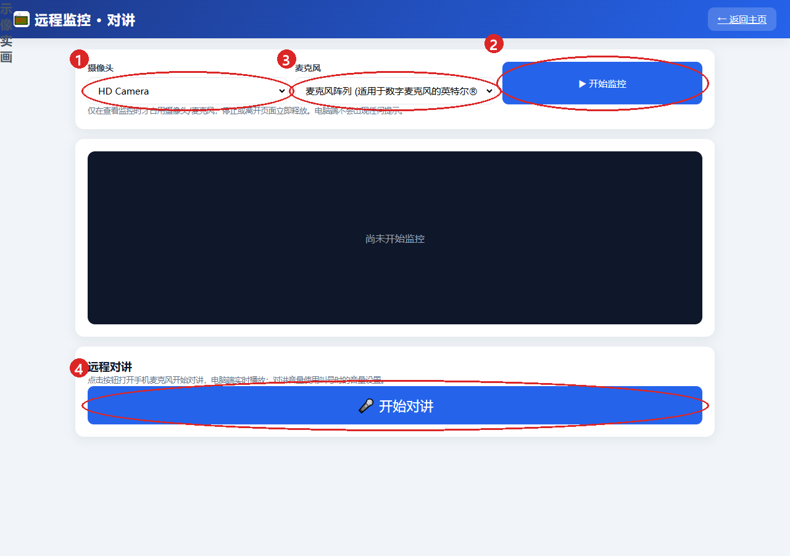
- 选择摄像头（列表是电脑上真实的设备名，不是"摄像头1/2"这种猜测）；
- 点「开始」看画面；
- 选择麦克风可听教室里的声音；
- 点「对讲」可以对着手机说话，由电脑音箱放出来。
说明文档里的画面区域已打码，实际显示的是摄像头实时画面。长时间观看也不会越来越卡
（采用"手机确认收到上一帧，电脑再推下一帧"的方式，不会堆积延迟）。
八、文件传输
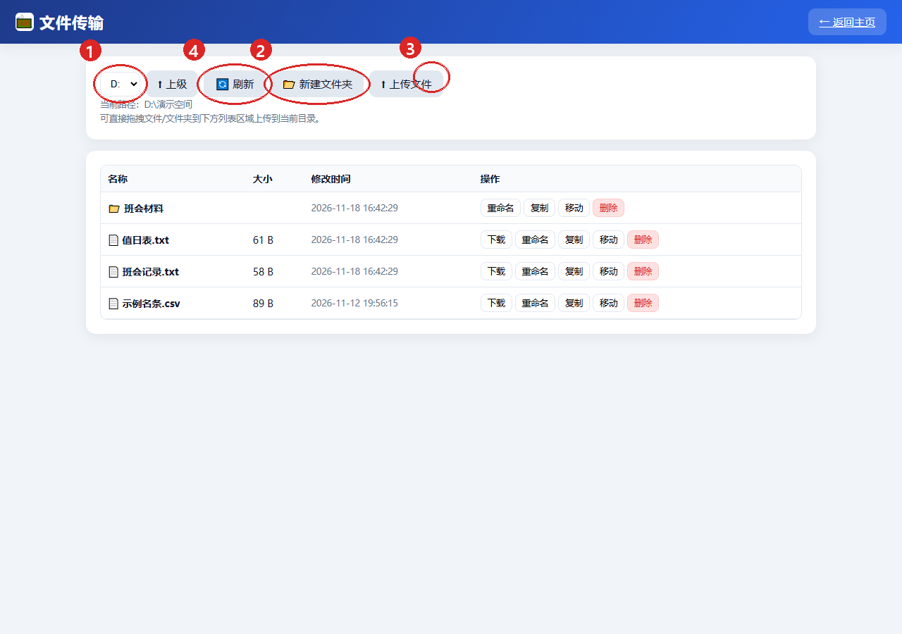
- 选择磁盘（C/D/E…）；双击文件夹进入下一层；
- 「新建文件夹」；
- 「上传文件」：从手机里选文件传到电脑，会显示上传进度条；
- 「刷新」重新读取当前目录。
每个文件后面有「下载 / 重命名 / 复制 / 移动 / 删除」按钮。图中为演示文件夹，不涉及任何个人文件。
九、远程控制
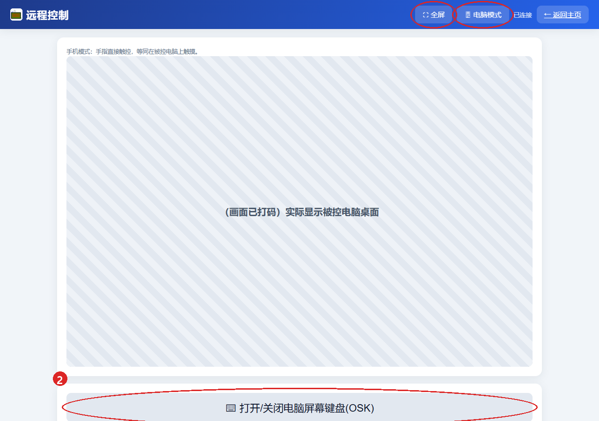
- 右上角「📱 手机模式 / 🖥 电脑模式」按钮可来回切换：手机模式=手指直接触控，等同在被控电脑上触摸（支持多指）；电脑模式=鼠标直接控制，键盘按键直接发送到被控电脑；
- 「屏幕键盘」：弹出手机输入法，给电脑打字；
- 「全屏」：把画面铺满手机屏幕。
主控端（正在操作的那个浏览器窗口）会自动隐藏鼠标指针，避免"指针漂移"；
被控电脑本身的鼠标指针照常显示，方便旁边的人知道点到哪里。
手机端支持多指触屏：两根手指同时按住可以双指缩放、拖动等。
画面区域已打码，实际显示被控电脑的桌面。
十、手机怎么用
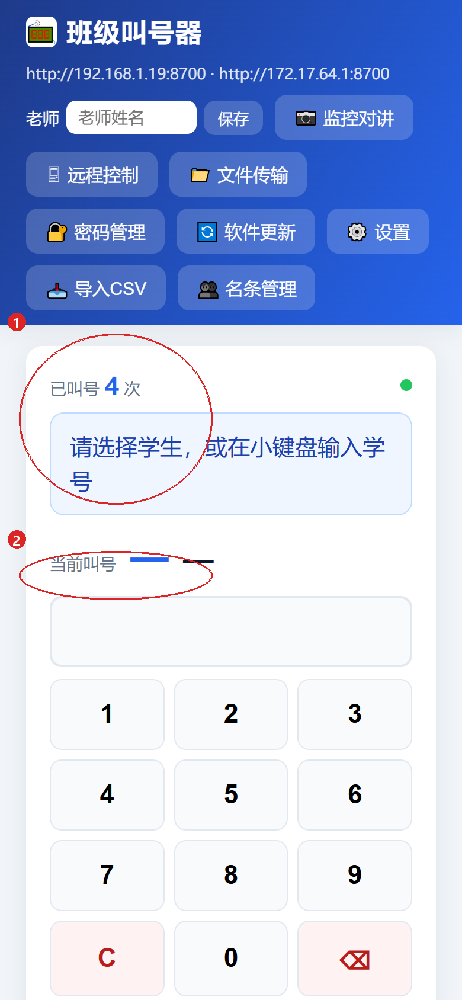
- 手机上打开 http://主机名.local:8000，界面会自动变成竖屏单列，小键盘和叫号按钮就在手边；
- 点「📢 叫号」即可让电脑播报，手机就相当于一个无线遥控器。
手机第一次使用监控 / 远控 / 文件 / 更新前，需要在本机点「密码管理」创建一个密码，
再在手机上点「🔑 激活」输入该密码。激活是一次性的：浏览器会生成一对密钥，
私钥只存在这个浏览器里，密码用完立刻作废。
十一、密码与授权
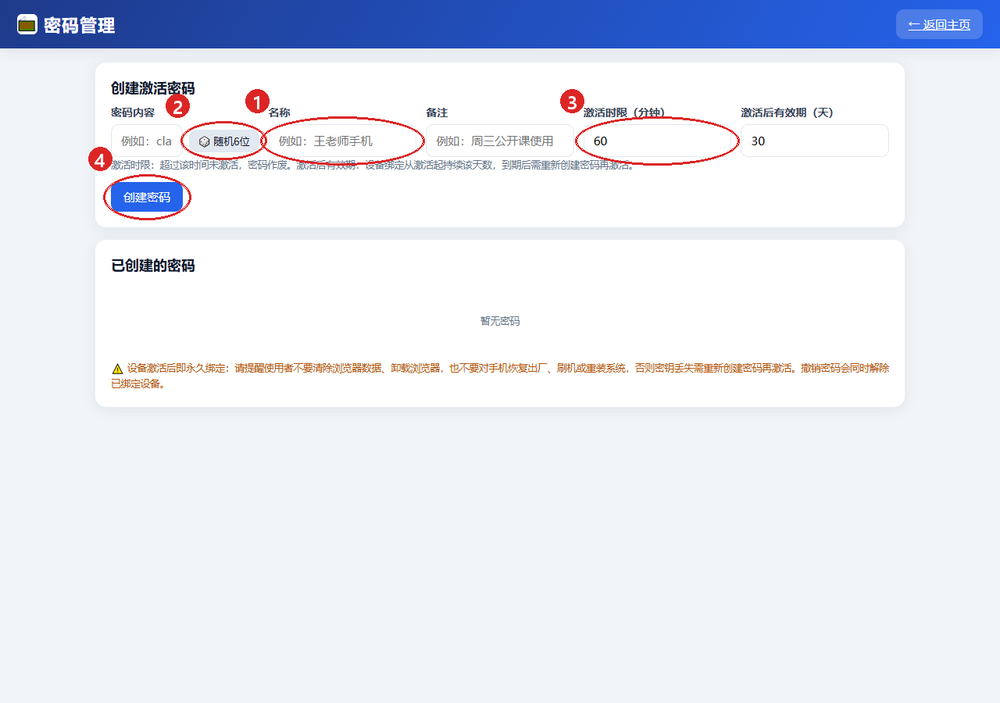
- 给这次授权起个名字（例如"我的手机"），方便以后识别；
- 点「随机」自动生成一个强密码；
- 设置激活有效期（分钟，过期作废，避免密码泄漏）；
- 点「创建」后，把密码在手机上输入一次即可。
密码是一次性的：激活成功后立即失效，之后靠浏览器本地密钥验证。
密码列表里可以随时"吊销"某台设备。
十二、软件更新（OTA）
12.1 检查并下载
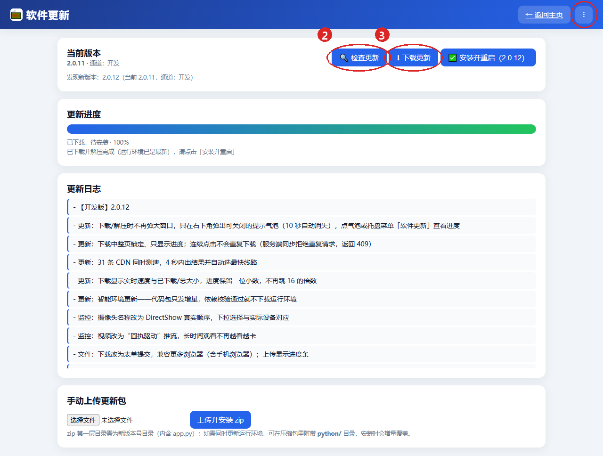
- 右上角「⋮」可以选更新通道与策略：稳定 / 内测 / 开发（高通道能收到低通道的版本）；
- 点「🔍 检查更新」，有新版才会出现「下载更新」按钮；
- 点「⬇ 下载更新」开始下载。
也可以「手动上传更新包」：选择一个本地 zip 直接安装。
12.2 下载时界面会被锁住
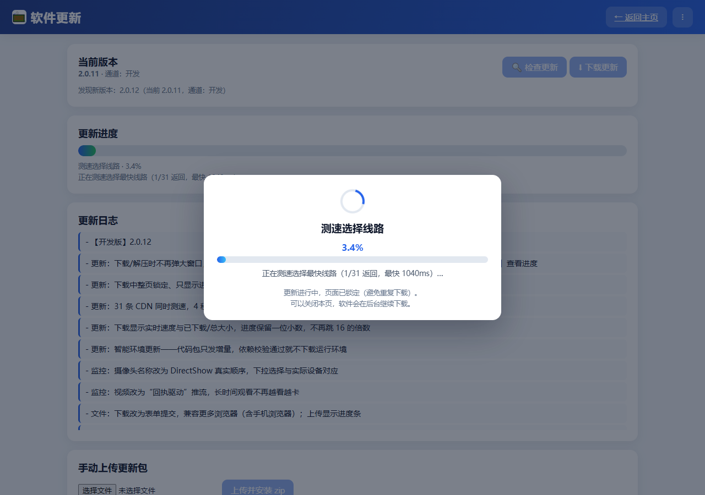
- 下载 / 解压期间整页被蒙层锁住，只显示进度：阶段、百分比、实时速度、已下载 / 总大小；
- 其它按钮点不到，所以连点多少次也只会下载一次；就算绕过网页直接调用接口，
服务端也会返回 409「更新已在进行中」，并保留正在运行的那个任务。
12.3 下载完成 → 安装并重启
- 下载解压完成后蒙层自动消失，出现「✅ 安装并重启（版本号）」按钮，点它才开始真正切换版本。
- 安装前会先自检运行环境（依赖库是否齐全），检查不通过就不切换版本，原版本继续可用，
不会出现"更新完起不来"。
- 重启期间网页会短暂断开，几秒后刷新即可。
更新的机制（和"环境"有关）：更新包分两部分——"代码包"很小（约 0.14 MB，秒下）；
"运行环境包"约 230 MB。软件先只下代码包，再对比新版本要求的依赖版本：
- 依赖都满足 → 只下代码包，不下载环境包（几秒钟搞定）；
- 有依赖缺失或版本不符 → 才去下载环境包补上。
下载前会同时向 31 个 CDN 镜像发请求测速，
4 秒内选出最快线路；下载支持断点续传，
网断了自动续传，不会从 0 重来。
12.4 右下角的更新提示气泡
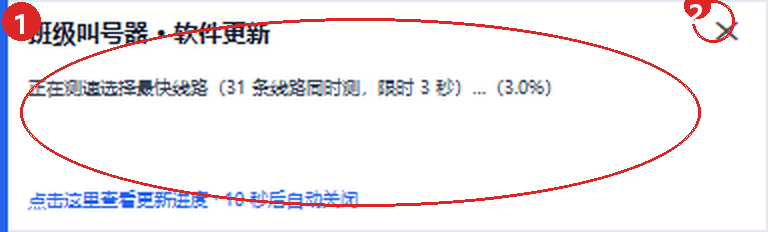
- 点气泡正文 → 打开更新界面看详细进度；
- 点右上角 ✕ → 直接关掉；不点的话 10 秒后自动消失（后台下载不受影响）。
开始下载、下载完成时各提示一次，平时不打扰上课；不会弹大窗口挡住屏幕。
十三、常见问题
- Q1. 手机打不开 / 提示证书不安全？
- ① 手机和电脑要在同一个 Wi-Fi；② 敏感功能必须用 https://主机名.local:9443，
自签名证书首次会警告，点「高级 → 继续访问」；③ 还不行就在 Windows 防火墙放行该端口的入站。
- Q2. 9443 端口启动失败？
- Windows 会把一段端口"保留"起来（Hyper-V / WinNAT 用），9443 正好落在保留段里时会报 WinError 10013。
软件会自动跳到未被保留的端口并记住它；也可以在设置里勾选「自动抢占系统保留端口」（需管理员）把 9443 抢回来。
- Q3. 监控页摄像头列表是空的，或者画面和名字对不上？
- 列表按 Windows DirectShow 枚举到的真实设备顺序生成，和实际设备一一对应。
刚插上摄像头时刷新页面即可；个别虚拟摄像头（如 OBS）需要先启动它的虚拟设备。
- Q4. 叫号没有声音？
- 设置里把「语音合成」改成离线语音试试（不依赖网络）；检查「叫号音量」是不是 0；系统音量是否静音。
- Q5. 更新很慢或一直失败？
- 软件会并发测速 31 条线路并自动选最快的，下载中断会自动断点续传。
网络实在差时，可以在电脑上手动下载 release 里的 zip，用「手动上传更新包」安装。
- Q6. 更新后想退回旧版本？
- 把 version.json 里的 version 改回旧版本号（旧版本目录还在）即可；
学生数据和叫号记录都存在 data/ 里，不会丢。
- Q7. 数据存在哪？换电脑怎么办？
- 名单、记录、密码、配置全部在 data/ 目录，整个文件夹拷到新电脑的同名目录即可。
十四、开源与致谢
本项目以 GNU 通用公共许可证第 3 版，或（由你选择）任何更高版本（GPL-3.0-or-later） 开源发布：
- 许可证全文见仓库根目录 LICENSE（自由软件基金会官方原文，未做修改）；
版权与"或更高版本"声明见 NOTICE。
- 源码仓库：https://github.com/github-xiaoli/class-call-system
- 用到的开源库：Flask、flask-sock、cryptography、zeroconf、opencv-python-headless、sounddevice、
comtypes、pycaw、pywin32、edge-tts、psutil 等，均遵循各自许可证。